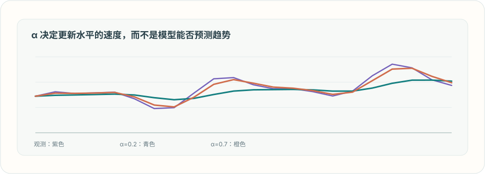

CHAPTER 05 / 28 · FOUNDATIONS
指数平滑与 ETS
简单预测有多强？在新数据到来时逐步更新水平，再添加趋势与季节。通过推导与滑块实验理解模型的结构与边界。
如果要预测下一期销量，只用上一期可能太敏感；取所有历史的平均又可能追不上变化。指数平滑是一组用递推状态平衡这两种倾向的方法。它以简单模型构建可解释的预测基线，而不是保证比复杂模型更准确。
01 · 简单指数平滑从一条递推开始
假设要预测明天的需求：只参考今天可能过于敏感，平均过去全部历史又容易跟不上变化。简单指数平滑（SES）保存一个不断更新的水平状态 ℓ_t，每次以比例 α 将新观测混入上一个状态。
第二行特别重要：对所有未来步长 h≥1，纯 SES 都给出相同水平预测，并不会自动预测持续增长。α 介于 0 与 1 之间，其选取要结合目标函数和滚动验证，不能固定推荐某个“通用最佳区间”。
02 · 历史权重为什么呈几何衰减
将递推式层层展开，最新观测的权重是 α，前一期是 α(1−α)，再前一期是 α(1−α)²。固定 α 时，越远的观测权重按几何级数衰减；有限样本中还有一个初始水平的剩余权重，不应将它悄悄忽略。
这解释了 SES 很适合在线更新：保存上一期水平状态，收到新观测时做一次加权计算即可。但效率高不意味着它理解节假日、促销、突发断点等外部信息。
03 · 调整 α，真正看到权重重新分配
拖动滑块观察最近七期的理论权重。权重总和可以小于 100%，因为更早的观测和初始水平未在下方列出。即使停用 JavaScript，下面仍可看到默认 α=0.30 的数值。

α 大不一定意味着数据噪声大，α 小也不一定好。若序列变化较快，过小的 α 可能滞后；若临时噪声很强，过大的 α 容易追随随机波动。最好通过对未来窗口的预测误差来选择。
04 · Holt：让水平之外再有一个趋势状态
如果销售额长期上涨，所有未来预测都等于最新水平的 SES 会系统性偏低。Holt 趋势法新增趋势 b_t，每期分别平滑水平与斜率。最常见的加法形式如下。
这里使用 Holt 的 β* 形式（一些教材记作 β*），不同软件或推导可能采用不同参数化。线性趋势法会持续延长斜率，可能造成不合理的远期增长；阻尼趋势会限制这种外推，但它需要额外的阻尼参数。
05 · Holt–Winters 的季节状态与 ETS 框架
Holt–Winters 再加入随季节位置变化的状态：加法季节在原始单位上近似恒定，乘法季节常适合随水平成比例增长的季节振幅。季节周期必须与采样频率匹配，且纯乘法方法往往需要正值数据。
| 方法 | 状态 | 可表达结构 |
|---|---|---|
| SES | 水平 | 无趋势、无季节的水平预测 |
| Holt | 水平 + 趋势 | 线性增长与下降 |
| Holt–Winters | 水平 + 趋势 + 季节 | 一个固定季节周期 |
| ETS | 误差 E + 趋势 T + 季节 S | 结构与概率误差共同定义 |
ETS(A,N,N) 的第一个字母 A 表示加法误差，后两个 N 表示无趋势、无季节；不是所有实现指数平滑的库都自动使用同一种 ETS 似然与区间估计。对含零或负值的业务序列，乘法误差模型更需要谨慎。
06 · Python：从手写 SES 到季节预测
第一部分只用 Python 标准库，精确验证递推逻辑；第二部分需要 numpy 和 statsmodels，以 6 年月度合成数据拟合加法季节性。
def ses(values, alpha, initial=None):
assert values and 0 <= alpha <= 1
level = values[0] if initial is None else initial
states = []
for value in values:
level = alpha*value + (1-alpha)*level
states.append(level)
return states
assert ses([10, 20], 0.5) == [10.0, 15.0]
assert ses([10, 20], 1.0)[-1] == 20.0
import numpy as np
from statsmodels.tsa.holtwinters import ExponentialSmoothing
rng = np.random.default_rng(2026)
t = np.arange(72)
y = 100+.25*t+8*np.sin(2*np.pi*t/12)+rng.normal(0,1,72)
fit = ExponentialSmoothing(y, trend="add", seasonal="add",
seasonal_periods=12).fit(optimized=True)
forecast = fit.forecast(12)
assert len(forecast) == 12需要进一步检验：同一未来时间窗口上的季节朴素基线是否更好？每轮训练窗口的趋势/季节参数是否稳定？能否依据明确的统计误差模型给出合理的预测区间？仅有训练拟合精度不算完成预测评估。
资料与核对来源
本章全部数值曲线均为教学合成数据。下列教材与官方接口用于核对状态更新、季节结构和 ETS 语义。